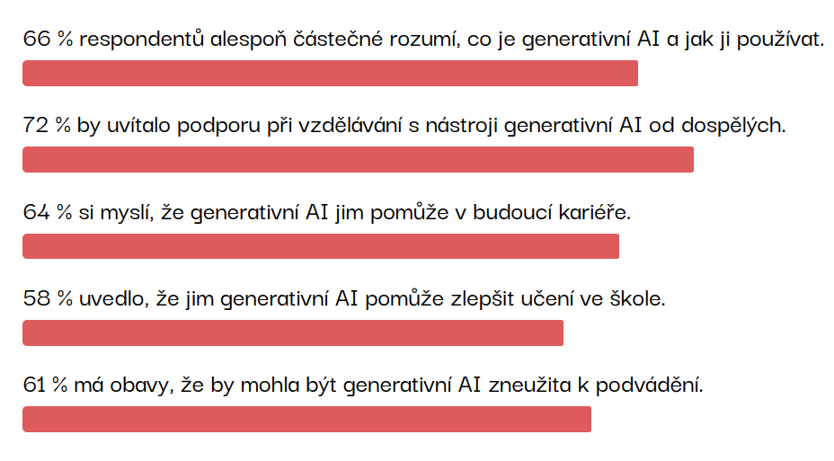
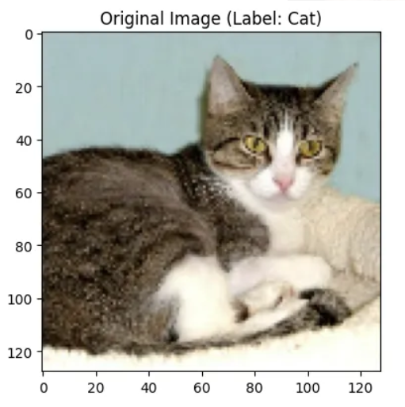
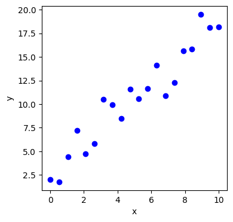
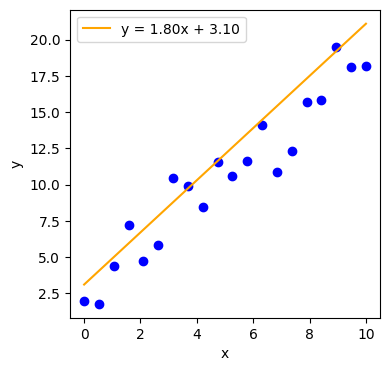
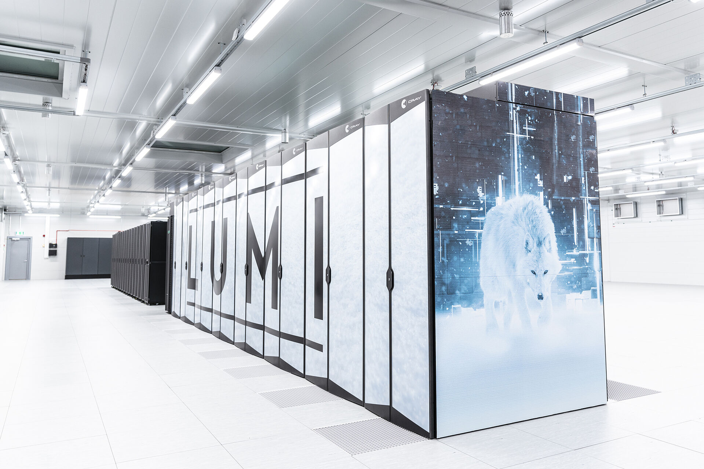

Kam AI zasahuje

Zuzana Nevěřilová
7. 5. 2025

jazykový korpus = datová sada s texty
Texty musí být:
Slovo “krindy” se v korpusu SYN v13 vyskytuje 35 krát. Celkem se v korpusu vyskytuje 6 400 899 055 slov.

statistika je měření, pravděpodobnost je odhad
pravděpodobnost, že ze slovníku vylosuju slovo “krindy” = 35/6400899055 = 5.47e-9
protože jde o malá čísla, často se používá jednotka p.m. (per million)
podmíněná pravděpodobnost = jaká je pravděpodobnost, že přijde slovo “pindy”, když se v textu objeví “krindy”?
P(″pindy″|″krindy″) = 100%
“a word is characterized by the company it keeps”
— Firth, J.R. (1957)
| Výraz | Frekvence | Počet p.m. |
|---|---|---|
| dobrý , | 55 762 | 8,71 |
| dobrý . | 41 731 | 6,52 |
| dobrý výkon | 35 258 | 5,51 |
| dobrý pocit | 32 507 | 5,08 |
| dobrý nápad | 22 402 | 3,5 |
| dobrý výsledek | 21 626 | 3,38 |
| dobrý zápas | 13 269 | 2,07 |
| dobrý a | 12 454 | 1,95 |
| dobrý fotbal | 12 374 | 1,93 |
| dobrý tým | 8 638 | 1,35 |
| dobrý dojem | 7 545 | 1,18 |
| dobrý den | 6 602 | 1,03 |
“krindy pindy” není “pindy krindy”
Text je sekvence slov (a neslov)
Záleží nejen na nejbližších sousedních slovech, ale i na širším okolí (kontext).

By Fschwarzentruber - Own work, CC BY-SA 4.0, https://commons.wikimedia.org/w/index.php?curid=162969550
By prayitno from Los Angeles, USA - Defenders of the UniverseUploaded by themeparkgc, CC BY 2.0, https://commons.wikimedia.org/w/index.php?curid=22523905
Neuron je výpočetní jednotka, která popisuje přímku
y = ax + b

By Sewaqu - Own work, Public Domain, https://commons.wikimedia.org/w/index.php?curid=11967659
Parametry a a b
y = ax + b
a, b se někdy nazývají váha (weight) a zkreslení (bias)
y = wx + b
Ne všechna data jsou stejně důležitá

Ne všechna data jsou stejně důležitá





velká paměť + velký výkon = drahé počítače


Pro srovnání
průměrná spotřeba domácnosti za rok
Není jedna AI, která vládne všem (zatím).
Selrond https://www.deviantart.com/selrond/art/One-Ring-To-Rule-Them-All-507183083
NotebookLM vygeneruje myšlenkovou mapu, podcast
Lumen5 vygeneruje doprovodné video
SightEngine: https://dashboard.sightengine.com/ai-image-detection
Winston AI: https://gowinston.ai/
Content at Scale: https://contentatscale.ai/ai-content-detector/
ZeroGPT: https://www.zerogpt.com/
https://padlet.com/popelucha/n-stroje-ai-ozxandxd6f8vy94m
Charakter umělých lidí je určen záměry jejich tvůrců. A záměrem humanoidů táhnoucích kočáry na parní pohon bylo vytvořit dělníky zotročené svými lidskými pány. To by podle Nishimurova názoru nevyhnutelně vedlo k vytvoření vykořisťované podtřídy ve stylu RUR, která by se musela vzbouřit.
— Yulia Frumer: The Short, Strange Life of the First Friendly Robot


“If you think about the things that are most important to the future of the world, I think good AI is probably one of the highest things on that list. So we are creating OpenAI. The organization is trying to develop a human positive AI. And because it’s a non-profit, it will be freely owned by the world.”
— Sam Altman


v současnosti datacentra spotřebovávají 2 % energie (víc než Francie)
v roce 2026 se očekává, že to budou 4 % (tolik, co Japonsko)
výstavbu datacenter limituje energie (na provoz a chlazení)
Můj prompt pro NotebookLM:
Chci vědět, jaká jsou rizika AI. Zajímají mě všechny obory: sociální rizika, bezpečnost, zbraně, deepfakes, lidé, kteří přijdou o práci nebo za jejich práci nebude ochoten nikdo zaplatit víc než za vygenerovanou napodobeninu. Zajímají mě dopady na životní prostředí - jak při trénování modelů, tak při jejich provozu. Kolik se musí postavit elektráren, například. Zajímá mě, zda velké jazykové modely mohou chránit kulturní a jazykovou diverzitu lidstva nebo zda ji poškozují. Vede používání AI k demokratizaci vzdělávání, nebo naopak bude rozevírat nůžky mezi vzdělanými a bohatými a chudými nevzdělanými lidmi? Je AI riziko pro ekonomiku a trhy? Může být AI zneužita pro sledování a řízení obyvatel bez jejich vědomí?
Ano
Ne
Komu budeme platit za díla, která vygenerovala AI?
Generative AI also presents a threat to the livelihood of writers and other creative artists, and may de-value their work. Models are often trained on writers’outputs, without their permission, and then the models can be used to generate similar content.
— Andrea Cristina McGlinchey and Peter Barclay: Using Machine Learning to Distinguish Human-Written from Machine-Generated Creative Fiction, ICAART 2025.
Bude méně povolání pro nekvalifikované lidi? Jaká povolání zbudou?
Investiční banka Goldman Sachs odhaduje, že tato rychle se rozvíjející technologie by mohla ve Spojených státech a v Evropě ztratit nebo snížit 300 milionů pracovních míst U žen o 50 % vyšší pravděpodobnost, že budou muset změnit povolání, než u jejich mužských protějšků.
— https://www.forbes.com/sites/jackkelly/2024/10/28/how-ai-could-be-detrimental-to-low-wage-workers/
Automatizace způsobila v USA mezi lety 1980 a 2016 většinu změn ve struktuře mezd (50-70 %).
The real earnings of men without a high-school degree are now 15% lower than they were in 1980.
— Daron Acemoglu & Pascual Restrepo, 2022. “Tasks, Automation, and the Rise in U.S. Wage Inequality,” Econometrica, Econometric Society, vol. 90(5), pages 1973-2016, September.
Už teď nejde rozpoznat vygenerovaný text od textu, který napsal člověk.
Lidstvo prožilo cca 100 000 let s verbální komunikací (jazykem), s neverbální ještě řádově víc. Zhruba před 10000 lety vzniklo zemědělství, cca před 5000 lety písmo. Nejstarší knihy jsou z 8. století, od 15. století máme knihtisk. Jsme velmi špatně adaptovaní na nová média (máme tendenci věřit tomu, co vidíme a slyšíme).
Na druhou stranu, AI může pomoci i v odhalování fake news, případně v diskuzi s lidmi, kteří fake news propadli.
If you’re afraid and believe that the world is dangerous and random and chaotic, it’s almost a comforting idea that that there’s order in the world, even if that order is something like an evil secret government.
— Thomas H. Costello et al.: Durably reducing conspiracy beliefs through dialogues with AI.Science385,eadq1814(2024).DOI:10.1126/science.adq1814 — https://www.debunkbot.com/
Výzkumníci např. zjistili, že některé nástroje pro generování fotografií zobrazují osoby s vyšším společenským postavením (lékaře, soudce, ředitele apod.) se světlou pletí, zatímco osoby s nižším společenským postavením (prodavače z fast foodu, uklízečky, umývače nádobí apod.) s tmavší pletí či asijskými rysy. Dopouští se tak biasu.
Perpetuating stereotypes and misrepresentations through imagery can pose significant educational and professional barriers for Black and Brown women and girls, said Heather Hiles, chair of Black Girls Code. “People learn from seeing or not seeing themselves that maybe they don’t belong,” Hiles said. “These things are reinforced through images.”
— Leonardo Nicoletti and Dina Bass: Humans Are Biased. Generative AI Is Even Worse. Bloomberg. June 9, 2023 https://www.bloomberg.com/graphics/2023-generative-ai-bias/
Stable Diffusion’s text-to-image model amplifies stereotypes about race and gender — here’s why that matters


Zánik jazyků: z cca 7000 jazyků světa se jich k trénování chatbotů použilo asi 100.
Rozpoznání hlasu: modely nejsou schopny rozpoznat dialekty, akcent a jiné varianty jazyka.
Budeme mluvit a psát všichni stejně?
Běžně používáme biometrické údaje: nejčastěji otisk prstu.
Už dlouhou dobu funguje docela dobře rozpoznávání lidí obličejů a styl chůze (gait).
Naštěstí pro nás, EU AI Act používání AI pro sledování lidí zakazuje. Naneštěstí používáme množství technologií, které pocházejí odjinud.
Krádeže identit: napodobení hlasu, deepfake videa, porušení online privacy
Na druhou stranu tytéž technologie pomáhají (zachování hlasu pro pacienty po odstranění části nebo celé hlasivky).
Podvádět je tak snadné!
Submarine cable competition between the United States and China has serious implications for today’s information war. If China and the U.S. continue to bid against each other, countries will be forced to choose between their cable networks, forming a “digital Iron Curtain” that splits the internet ecosystem in two.
— Nicole Robinson, Grace Phillips: The Emerging “Cold Tech War” Between the U.S and China. Aug 2023. The Heritage Foundation.
Trénování modelů zatěžuje životní prostředí

Kdo to vůbec zaplatil?
Na druhou stranu AI může také energii šetřit:
Největší výzvy dneška spojené s AI:
The pressing need to prioritize a better approach to building AI is evident. To do so, it is necessary to reimagine an educational program where AI competencies, inclusive of building a lens interrogating the ethics of AI in addition to technical creation, are seen as core to preparing students for a technology-powered future.
— The AI Report 2025

…najděte tu svou